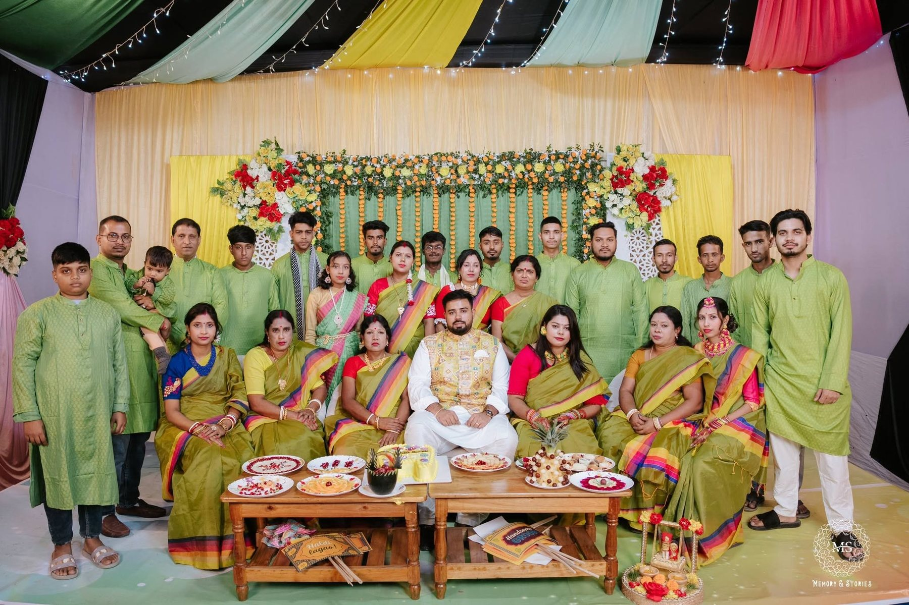
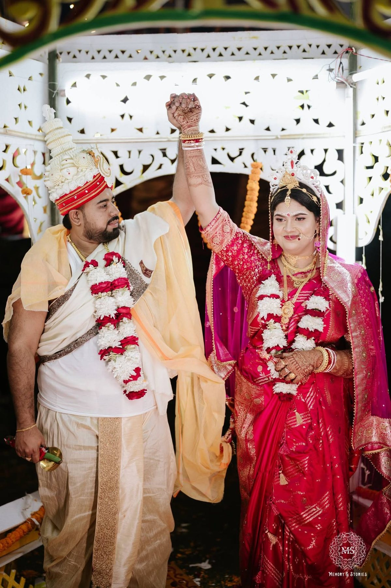

The Beginning
Family, preparation, joy, and the first colors of celebration.
Opening the wedding chronicle...
A Sacred Hindu Wedding Chronicle
December 15, 2025
From two souls to one sacred union. With the blessings of Lord Ganesha and the guidance of our elders, we stepped into a new chapter of life as life partners.
With Divine Blessings
Our wedding was more than a ceremony. It was a journey of prayers, rituals, laughter, blessings, and emotional memories. Every frame preserved here carries a part of our family, our culture, and the beginning of our forever.
দুই আত্মা, এক পবিত্র বন্ধন — আশীর্বাদ, ভালোবাসা ও ঐতিহ্যের একটি চিরস্মরণীয় যাত্রা।
Family, preparation, joy, and the first colors of celebration.
Guided by elders, loved ones, and sacred rituals.
From garlands and vows to a lifelong promise.
Wedding Timeline
Scroll through the moments from Haldi and family joy to the wedding mandap, rituals, portraits, and celebration night.
The celebration began with colors, laughter, decorated fruits, family blessings, and joyful preparation.
Parents, elders, relatives, friends, and little guests became part of a warm family memory.
Under sacred lights and flowers, the rituals joined two lives and two families.
Garlands, hand rituals, holy offerings, and sacred vows shaped the heart of the ceremony.
Classic, outdoor, and cinematic portraits preserved the beauty of the wedding journey.

Chapter 01
The first chapter was filled with warm green and yellow tones, family portraits, decorated trays, playful signs, and the joyful presence of the groom squad. These moments set the emotional foundation for the wedding journey.
View Haldi Memories
Chapter 02
Under the sacred mandap, surrounded by flowers, lights, family, and blessings, Palash and Oishe began their life as husband and wife. Every ritual carried love, commitment, and divine meaning.
View Ceremony PhotosMeaning Behind The Rituals
The bridal mehendi holds beauty, patience, and celebration. The names written on the palms became a delicate symbol of love and togetherness.
The sacred hand ritual represents blessings, purity, and the joining of two lives through family guidance and traditional ceremony.
The exchange of garlands symbolizes acceptance, respect, and the joyful beginning of the bride and groom’s sacred bond.
The mandap became the center of prayer, vows, blessings, and the emotional beginning of a lifelong partnership.
Photo Gallery
Filter by celebration, ceremony, and portraits. Click any photo to view it larger.
Wedding Films
Highlight clips and video memories from the wedding journey.
Private Family Album
Use the wedding date password to reveal the private album preview. Default password: 15122025
Blessing Wall
Messages are saved in this browser so this static site can work without a database. For a live website, this can later be connected to Firebase, Google Sheet, or a backend.
Our Forever Memory
May our marriage be filled with love, patience, understanding, and endless togetherness.